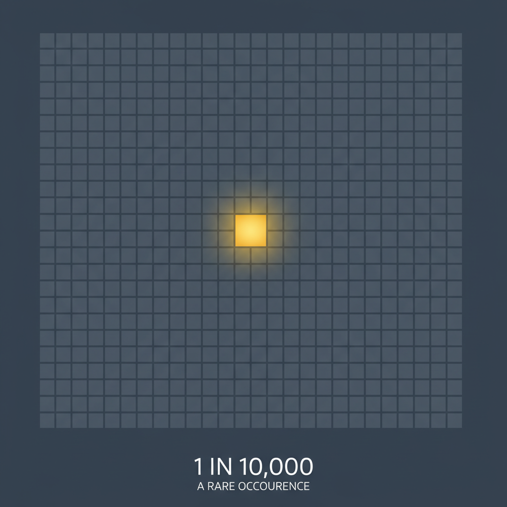
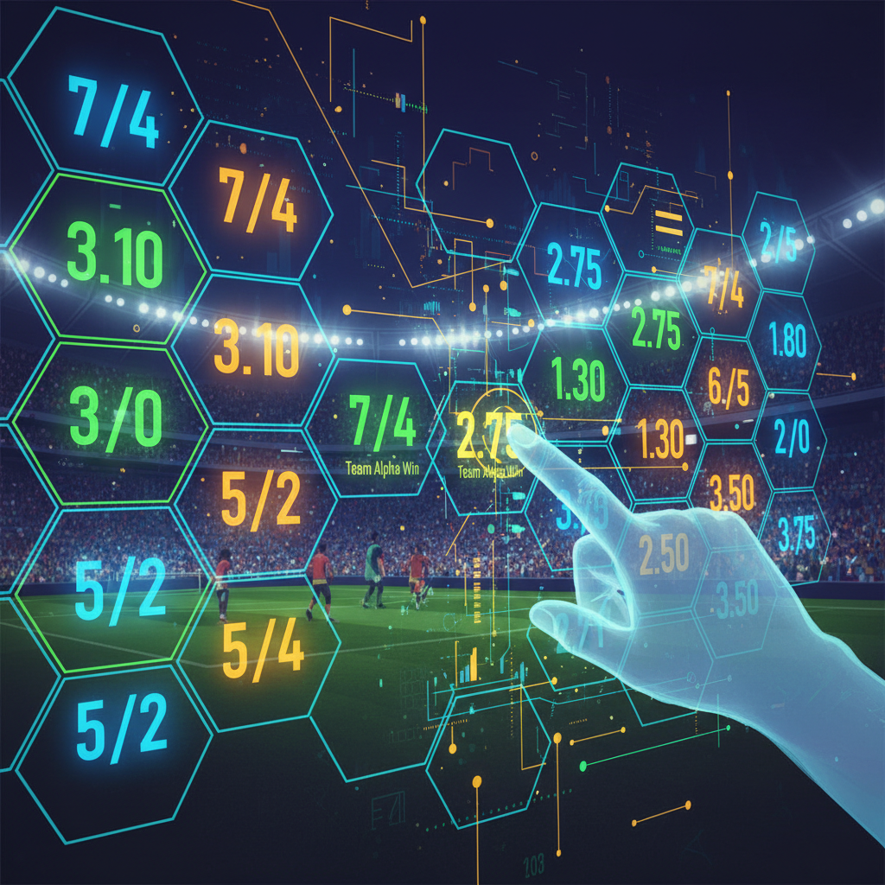

Decoding the Odds: From a 1 in 10,000 Chance to Winning Your Bets
We navigate a world of numbers every day. What's the chance of rain? What are the odds of winning that giveaway? From casual conversation to high-stakes decisions, we're constantly assessing probability and chance. But do we truly grasp what these numbers mean? When you hear something has a 1 in 10,000 chance of happening, the number sounds immense, but it can be hard to visualize.
This guide will demystify the language of probability. We'll break down what rarity really looks like, translate confusing percentages into simple fractions, and even pull back the curtain on how odds work in the complex world of betting. Whether you're a curious mind or a budding strategist, understanding these concepts is a superpower.
The Fundamentals of Rarity: Putting Numbers into Perspective
Before we can tackle complex odds, we need to build a strong foundation. This starts with understanding the simple, elegant relationship between percentages, fractions, and the real-world chances they represent.
What Does "Percent" Actually Mean?
The word "percent" is your first clue. It comes from the Latin per centum, which literally means "by the hundred." So, when you see a number with a percent sign (%), you're simply looking at a fraction of 100.
Is 1% a 1 in 100? Absolutely. 1% is one part out of a hundred, or a 1 in 100 chance.
From Percentages to Fractions: The Simple Conversions
With the "out of 100" rule in mind, converting other percentages becomes straightforward. It's just a matter of moving the decimal point.
- Is 0.1% 1 out of 1000? Yes. If 1% is 1 in 100, then 0.1% is ten times smaller, making it 1 in 1,000.
- Is 0.05% 1 in 2000? Correct. This is half of 0.1%, so the "out of" number doubles from 1,000 to 1 in 2,000.
- What does 0.001 mean? As a decimal, 0.001 is equivalent to one-thousandth. To express it as a percentage, you multiply by 100, which gives you 0.1%. So, 0.001 represents a 1 in 1,000 chance.
Gauging Rarity: From Common to Extraordinary
Now let's apply this to the core question: How rare is something?
- How rare is 0.5 chance? A 0.5 chance is not rare at all! It's another way of saying 50%, or 1 in 2. This is the probability of flipping a coin and getting heads.
- How common is 1 in 200? This is uncommon but not unheard of. In a stadium with 40,000 people, you'd expect to find 200 individuals who fit a 1-in-200 characteristic.
- How rare is 1 out of 500? We're now entering the territory of true rarity. This is the approximate odds of a person being born with an extra finger or toe (polydactyly).
- Is less than 1% rare? Yes, in most contexts, an event with a probability of less than 1% (rarer than 1 in 100) is considered rare.
- How rare is 1 in 8000? Extremely rare. For perspective, this is roughly the chance of a non-professional golfer hitting a hole-in-one on a par-3 hole.
- What is an example of 1 in 10,000 odds? The classic example is finding a four-leaf clover. This is a benchmark for an event that is exceptionally rare but still conceivable.
- Is 1 in 100k rare? This is profoundly rare. A 1 in 100,000 chance is so small that it becomes difficult to imagine. It's more than twice the capacity of the largest football stadium in the world.
The Power of Compounding: When Rare Events Collide
Things get even more interesting when you calculate the odds of two independent rare events happening in a row. You do this by multiplying their probabilities.
How rare is it to get two 1% in a row? A 1% chance is 1/100. To find the odds of it happening twice, you calculate (1/100) * (1/100) = 1/10,000. So, witnessing two consecutive 1% probability events is the same as a single 1 in 10,000 event.
The Philosophical and Practical Side of Probability
Beyond the raw numbers, probability touches on fascinating concepts about possibility, value, and even the fundamental patterns of the universe.
The Question of Absolute Certainty: Does a 0% Chance Exist?
In theory, a 0% chance means an event is absolutely impossible. However, in the real world of statistics and physics, it's more complex. For most practical purposes, we might assign a 0% chance to something like a human sprouting wings and flying. But in quantum mechanics, some events are not impossible, just so mind-bogglingly improbable that they are considered to have a "statistical" 0% chance of ever being observed.
Good vs. Bad Odds: A Matter of Perspective
Is 1 in 5000 good odds? This question is meaningless without context. If 1 in 5,000 is your chance of winning a new car for free, those are fantastic odds! If it's your chance of a critical equipment failure, those are terrifyingly bad odds. "Good" odds depend entirely on the relationship between the risk and the reward.
A Detour into Divine Proportions: What is the Golden Ratio?
While not directly related to probability, the Golden Ratio is another famous mathematical concept. It's an irrational number, approximately 1.618, that appears frequently in nature, art, and architecture. It's found in the spiral of a seashell, the branching of trees, and the proportions of the Parthenon. It represents a sense of natural aesthetic balance and proportion, not a measure of chance.
Probability in Practice: The World of Betting and Odds
Nowhere is the understanding of probability more critical than in the world of sports betting. Here, odds aren't just abstract numbers; they are the language of risk and potential profit.
How Do Bookmakers Calculate Probability?
Bookmakers don't just guess. They employ teams of statisticians and use sophisticated algorithms to calculate the probability of outcomes. They analyze historical data, team form, player injuries, and even weather conditions. However, their goal isn't just to be accurate; it's to make a profit. They do this by building a margin, or "vig," into their odds, ensuring they make money regardless of the outcome.
Fair Odds vs. Bookmaker Odds
This is the most crucial concept for any bettor to understand.
- What are “true odds” in betting? True odds represent the actual, real-world probability of an event happening. If a coin flip has a 50% chance of landing on heads, its true odds are 1/1 (or 2.0 in decimal).
- What are fair odds vs bookmaker odds? Fair odds are a direct conversion of true odds with no profit margin built in. Bookmaker odds are the odds you are actually offered. They are always slightly worse for the bettor than the fair odds because they include the bookmaker's profit margin.
Reading the Market: How Implied Odds Work in Betting
The odds offered by a bookmaker imply a certain probability. Learning to calculate this is key.
- How do implied odds work in betting? You can convert any betting odd into a percentage. For decimal odds, the formula is (1 / decimal odds) * 100. If the odds are 2.50, the implied probability is (1 / 2.50) * 100 = 40%.
- Can probability help you win bets? Absolutely. The entire concept of "value betting" is based on it. If your personal analysis suggests the true probability of an event is higher than the bookmaker's implied probability, you have found a value bet. You are essentially getting better odds than you should be.
What Does a Low-Probability Chance Look Like?
So, how would a bookmaker represent a rare event, like a 1% chance?
What does a 1% chance look like in betting terms? A 1% chance means there are 99 chances of it not happening for every 1 chance that it will. In betting, this longshot would be represented as:
- Fractional Odds: 99/1
- Decimal Odds: 100.00
- American (Moneyline) Odds: +9900
Seeing these numbers immediately tells a seasoned bettor they are looking at a massive underdog with a very low probability of success, but a huge potential payout.
Conclusion: From Chance to Choice
Understanding probability is about more than just numbers; it's about understanding the world around you. It transforms abstract concepts like a 1 in 8,000 chance from a meaningless figure into a tangible measure of rarity. It allows you to see the hidden mechanics behind games of chance and the strategic landscape of betting. By grasping the difference between true odds and offered odds, you move from being a passive participant to an informed decision-maker. The world is full of probabilities, but with knowledge, you can learn to put the odds in your favor.